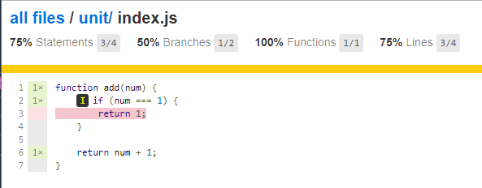
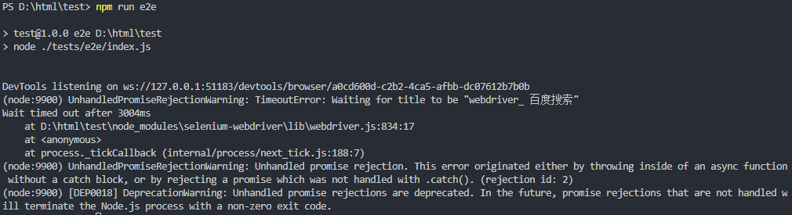
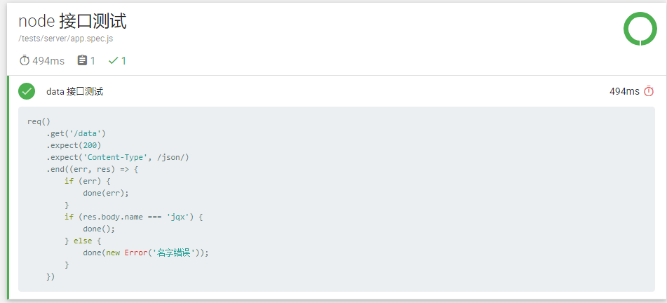
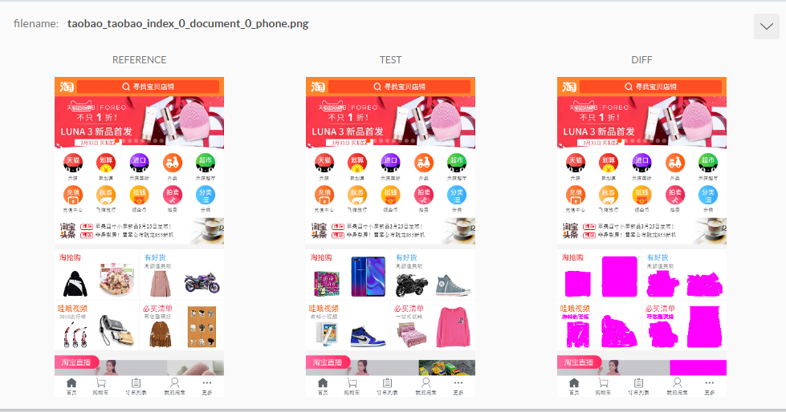

自 js 崛起，GitHub 上有越来越多的开源项目，而每个项目的根目录下必然会有 test，用来做项目的自测。js 已经入侵测试领域了。
本贴记录一些常用的测试库，和基本使用方法。
一、单元测试
使用 karma、phantomjs（无头浏览器） 进行单元测试（小函数、功能），并使用 karma-coverage 生成报表。
使用 npm 安装 karma，karma-coverage，jasmine-core，karma-jasmine，karma-phantomjs-launcher。然后调用 karma init 进行初始化，在根目录下得到 karma.conf.js 文件。配置如下：
1 | { |
/tests/unit/index.js 文件
1 | function add(num) { |
/tests/unit/index.spec.js 文件
1 | describe('加一函数测试', function () { |
运行 karma start 得到如下报表，其中得到测试结果以及提醒测试js中有部分代码没有覆盖到。

二、性能测试
三、安全测试
四、功能测试
模拟用户操作
使用 selenium-webdriver 模拟用户操作。
用 npm 安装 selenium-webdriver，并在 selenium-webdriver 的npm 网站上下载相关浏览器的 driver，解压在根目录下。
以下是调用 selenium-webdriver 的官方例子，node运行如下js，测试结果在终端输出。
1 | const { Builder, By, Key, until } = require('selenium-webdriver'); |

后台服务测试
使用 mocha 进行后台接口数据测试。
使用 npm 安装 express（node服务库），mocha，mochawesome（生成报表），supertest（代理服务）
app.js 文件
1 | const express = require('express'); |
app.spec.js 文件
1 | const superagent = require('supertest'); |
根目录下创建 mochaRunner.js 文件
1 | const Mocha = require('mocha'); |
node 运行 mochaRunner.js，并生成报表

五、UI测试
使用 backstopjs 进行 ui 测试。
使用 npm 安装 backstopjs。安装完后运行 backstop init 命令初始化。
配置根目录下的 backstop.json
1 | { |
运行 backstop test 进行测试。生成报表中，像素点不同之处都会标红，如下
